live
S1 — reduction_summary
- Question
- For each configuration, what do the reduced I(q) curves and the 2D I(qx,qy) maps of this reduction look like?
- Method
- Used the frozen R1 source S0a; overlaid all reduced I(q) curves of each configuration on one log–log plot and rendered every I(qx,qy) file as a log-intensity 2D map; grouped the figures by configuration in a gallery, four maps per row.
- Result
- S1 shows 2 I(q) overlays (14 curves each) and 28 I(qx,qy) maps for the configurations 4m2.5a and 8m10a, with the complete reduction table (28 rows). Intensities are relative (a.u.).
- Next
- Use S1 as the reduction summary; compare the 1,3 and 2,3 maps with shear rate.
- From
- S0a
- Folder
pages/S1_reduction_summary/· 1 run · created 2026-11-19 · closed 2026-11-19
Reduced I(q) and I(qx,qy) by configuration 30 figures
4m2.5a · I(q)

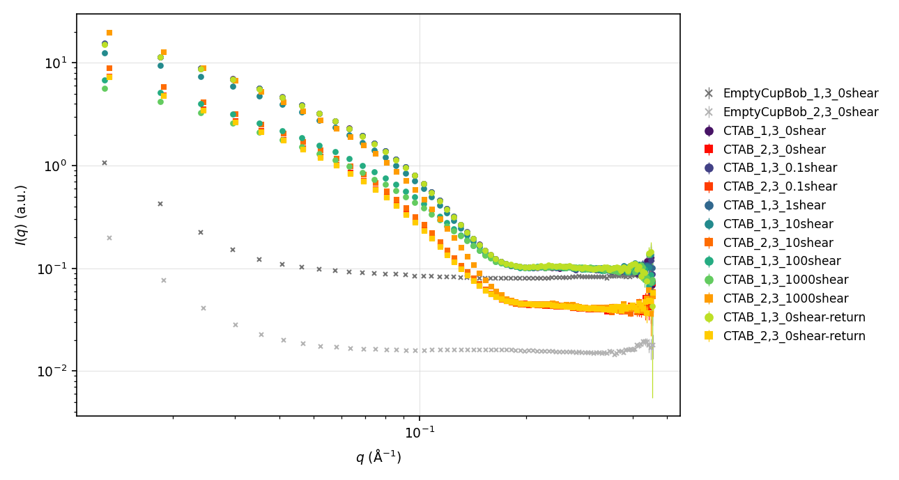
8m10a · I(q)

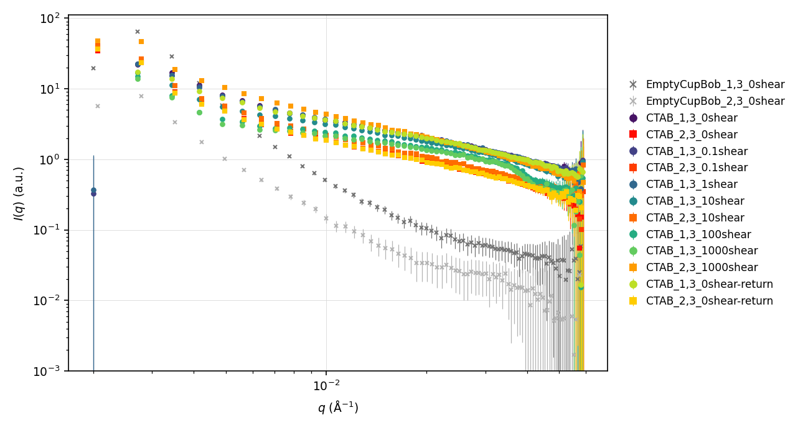
4m2.5a · I(qx,qy)

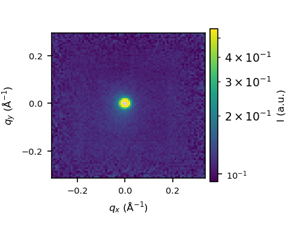

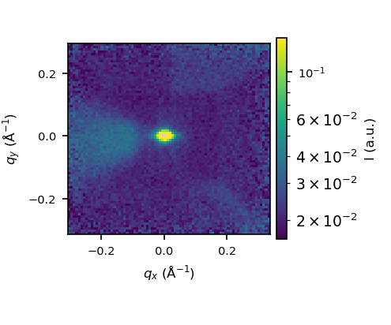


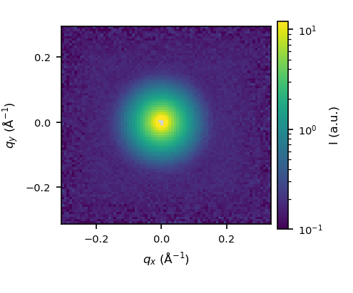

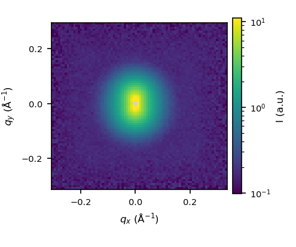

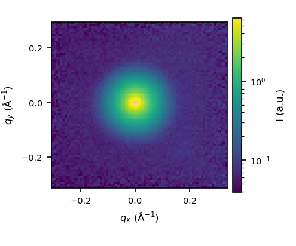

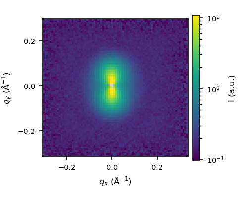

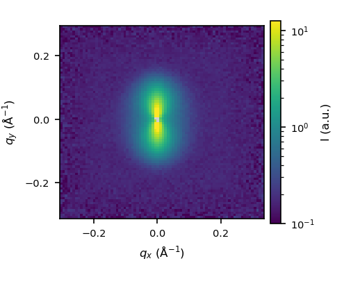

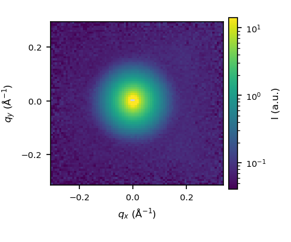

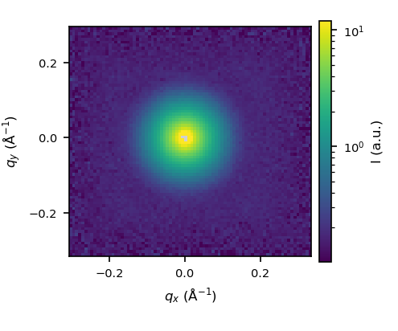

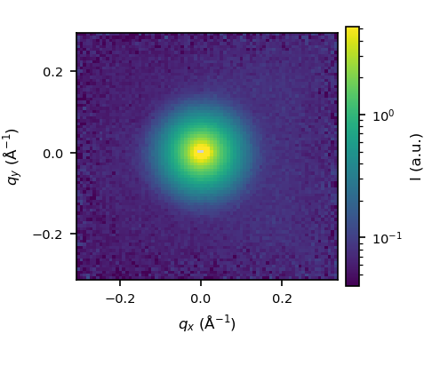
8m10a · I(qx,qy)

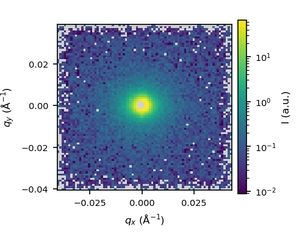

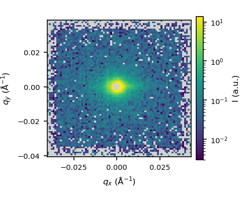

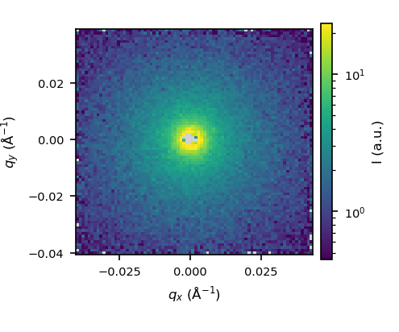

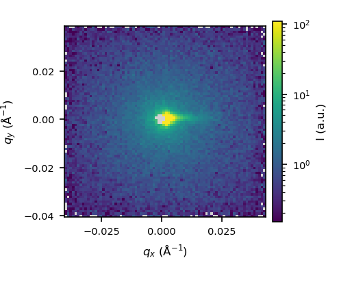

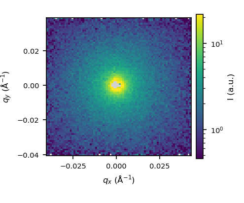


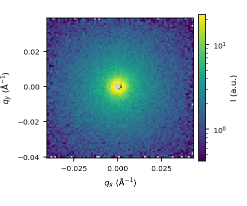

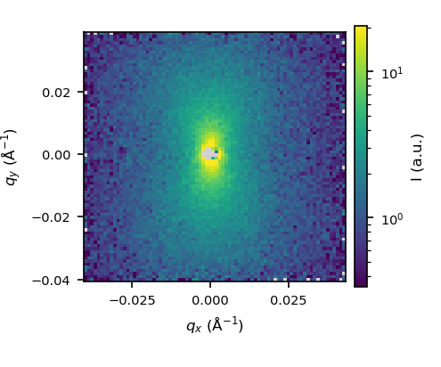

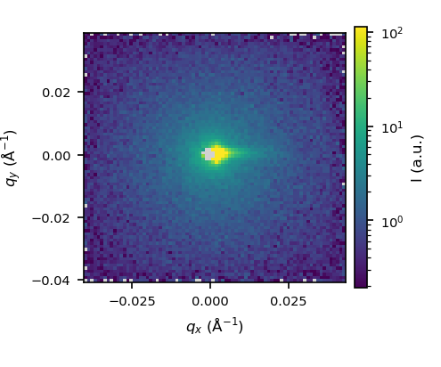

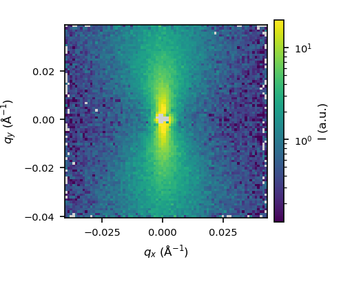

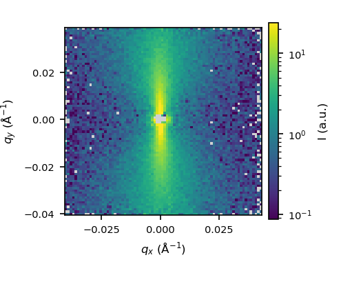

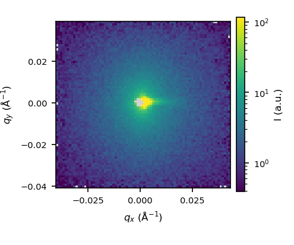

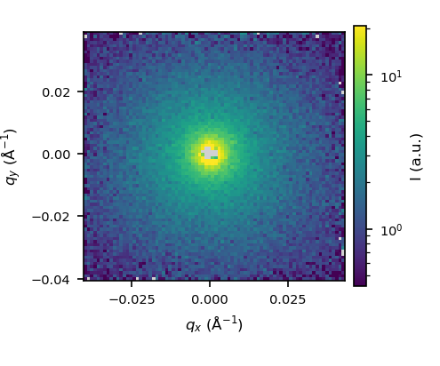

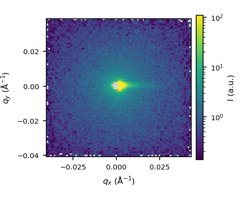
reduction_table.csv 28 rows
| Idx | Sample | Config | Scatt | Trans | Thick | Bkg | BkgTr | Empty | Status | Start |
|---|---|---|---|---|---|---|---|---|---|---|
| 1 | EmptyCupBob_1,3_0shear_4m2.5a | 4m2.5a | 188908 S-EmptyCupBob 1,3_0shear 4m2.5a | 188904 T-EmptyCupBob 1,3_0shear 4m2.5a | 0.1 | — | — | 188898 T-empty beam 1,3 4m2.5a | done | |
| 2 | EmptyCupBob_2,3_0shear_4m2.5a | 4m2.5a | 188909 S-EmptyCupBob 2,3_0shear 4m2.5a | 188905 T-EmptyCupBob 2,3_0shear 4m2.5a | 0.1 | — | — | 188918 T-empty beam 2,3 4m2.5a | done | |
| 3 | CTAB_1,3_0shear_4m2.5a | 4m2.5a | 188929 S-CTAB 1,3_0shear 4m2.5a | 188923 T-CTAB 1,3_0shear 4m2.5a | 0.1 | 188908 S-EmptyCupBob 1,3_0shear 4m2.5a | 188904 T-EmptyCupBob 1,3_0shear 4m2.5a | 188898 T-empty beam 1,3 4m2.5a | done | |
| 4 | CTAB_2,3_0shear_4m2.5a | 4m2.5a | 188930 S-CTAB 2,3_0shear 4m2.5a | 188924 T-CTAB 2,3_0shear 4m2.5a | 0.1 | 188909 S-EmptyCupBob 2,3_0shear 4m2.5a | 188905 T-EmptyCupBob 2,3_0shear 4m2.5a | 188918 T-empty beam 2,3 4m2.5a | done | |
| 5 | CTAB_1,3_0.1shear_4m2.5a | 4m2.5a | 188931 S-CTAB 1,3_0.1shear 4m2.5a | 188923 T-CTAB 1,3_0shear 4m2.5a | 0.1 | 188908 S-EmptyCupBob 1,3_0shear 4m2.5a | 188904 T-EmptyCupBob 1,3_0shear 4m2.5a | 188898 T-empty beam 1,3 4m2.5a | done | |
| 6 | CTAB_2,3_0.1shear_4m2.5a | 4m2.5a | 188932 S-CTAB 2,3_0.1shear 4m2.5a | 188924 T-CTAB 2,3_0shear 4m2.5a | 0.1 | 188909 S-EmptyCupBob 2,3_0shear 4m2.5a | 188905 T-EmptyCupBob 2,3_0shear 4m2.5a | 188918 T-empty beam 2,3 4m2.5a | done | |
| 7 | CTAB_1,3_1shear_4m2.5a | 4m2.5a | 188936 S-CTAB 1,3_1shear 4m2.5a | 188923 T-CTAB 1,3_0shear 4m2.5a | 0.1 | 188908 S-EmptyCupBob 1,3_0shear 4m2.5a | 188904 T-EmptyCupBob 1,3_0shear 4m2.5a | 188898 T-empty beam 1,3 4m2.5a | done | |
| 8 | CTAB_1,3_10shear_4m2.5a | 4m2.5a | 188939 S-CTAB 1,3_10shear 4m2.5a | 188923 T-CTAB 1,3_0shear 4m2.5a | 0.1 | 188908 S-EmptyCupBob 1,3_0shear 4m2.5a | 188904 T-EmptyCupBob 1,3_0shear 4m2.5a | 188898 T-empty beam 1,3 4m2.5a | done | |
| 9 | CTAB_2,3_10shear_4m2.5a | 4m2.5a | 188940 S-CTAB 2,3_10shear 4m2.5a | 188924 T-CTAB 2,3_0shear 4m2.5a | 0.1 | 188909 S-EmptyCupBob 2,3_0shear 4m2.5a | 188905 T-EmptyCupBob 2,3_0shear 4m2.5a | 188918 T-empty beam 2,3 4m2.5a | done | |
| 10 | CTAB_1,3_100shear_4m2.5a | 4m2.5a | 188941 S-CTAB 1,3_100shear 4m2.5a | 188923 T-CTAB 1,3_0shear 4m2.5a | 0.1 | 188908 S-EmptyCupBob 1,3_0shear 4m2.5a | 188904 T-EmptyCupBob 1,3_0shear 4m2.5a | 188898 T-empty beam 1,3 4m2.5a | done | |
| 11 | CTAB_1,3_1000shear_4m2.5a | 4m2.5a | 188945 S-CTAB 1,3_1000shear 4m2.5a | 188923 T-CTAB 1,3_0shear 4m2.5a | 0.1 | 188908 S-EmptyCupBob 1,3_0shear 4m2.5a | 188904 T-EmptyCupBob 1,3_0shear 4m2.5a | 188898 T-empty beam 1,3 4m2.5a | done | |
| 12 | CTAB_2,3_1000shear_4m2.5a | 4m2.5a | 188946 S-CTAB 2,3_1000shear 4m2.5a | 188924 T-CTAB 2,3_0shear 4m2.5a | 0.1 | 188909 S-EmptyCupBob 2,3_0shear 4m2.5a | 188905 T-EmptyCupBob 2,3_0shear 4m2.5a | 188918 T-empty beam 2,3 4m2.5a | done | |
| 13 | CTAB_1,3_0shear-return_4m2.5a | 4m2.5a | 188947 S-CTAB 1,3_0shear-return 4m2.5a | 188923 T-CTAB 1,3_0shear 4m2.5a | 0.1 | 188908 S-EmptyCupBob 1,3_0shear 4m2.5a | 188904 T-EmptyCupBob 1,3_0shear 4m2.5a | 188898 T-empty beam 1,3 4m2.5a | done | |
| 14 | CTAB_2,3_0shear-return_4m2.5a | 4m2.5a | 188948 S-CTAB 2,3_0shear-return 4m2.5a | 188924 T-CTAB 2,3_0shear 4m2.5a | 0.1 | 188909 S-EmptyCupBob 2,3_0shear 4m2.5a | 188905 T-EmptyCupBob 2,3_0shear 4m2.5a | 188918 T-empty beam 2,3 4m2.5a | done | |
| 15 | EmptyCupBob_1,3_0shear_8m10a | 8m10a | 188910 S-EmptyCupBob 1,3_0shear 8m10a | 188906 T-EmptyCupBob 1,3_0shear 8m10a | 0.1 | — | — | 188899 T-empty beam 1,3 8m8a | done | |
| 16 | EmptyCupBob_2,3_0shear_8m10a | 8m10a | 188911 S-EmptyCupBob 2,3_0shear 8m10a | 188907 T-EmptyCupBob 2,3_0shear 8m10a | 0.1 | — | — | 188919 T-empty beam 2,3 8m8a | done | |
| 17 | CTAB_1,3_0shear_8m10a | 8m10a | 188927 S-CTAB 1,3_0shear 8m10a | 188925 T-CTAB 1,3_0shear 8m10a | 0.1 | 188910 S-EmptyCupBob 1,3_0shear 8m10a | 188906 T-EmptyCupBob 1,3_0shear 8m10a | 188899 T-empty beam 1,3 8m8a | done | |
| 18 | CTAB_2,3_0shear_8m10a | 8m10a | 188928 S-CTAB 2,3_0shear 8m10a | 188926 T-CTAB 2,3_0shear 8m10a | 0.1 | 188911 S-EmptyCupBob 2,3_0shear 8m10a | 188907 T-EmptyCupBob 2,3_0shear 8m10a | 188919 T-empty beam 2,3 8m8a | done | |
| 19 | CTAB_1,3_0.1shear_8m10a | 8m10a | 188933 S-CTAB 1,3_0.1shear 8m10a | 188925 T-CTAB 1,3_0shear 8m10a | 0.1 | 188910 S-EmptyCupBob 1,3_0shear 8m10a | 188906 T-EmptyCupBob 1,3_0shear 8m10a | 188899 T-empty beam 1,3 8m8a | done | |
| 20 | CTAB_2,3_0.1shear_8m10a | 8m10a | 188934 S-CTAB 2,3_0.1shear 8m10a | 188926 T-CTAB 2,3_0shear 8m10a | 0.1 | 188911 S-EmptyCupBob 2,3_0shear 8m10a | 188907 T-EmptyCupBob 2,3_0shear 8m10a | 188919 T-empty beam 2,3 8m8a | done | |
| 21 | CTAB_1,3_1shear_8m10a | 8m10a | 188935 S-CTAB 1,3_1shear 8m10a | 188925 T-CTAB 1,3_0shear 8m10a | 0.1 | 188910 S-EmptyCupBob 1,3_0shear 8m10a | 188906 T-EmptyCupBob 1,3_0shear 8m10a | 188899 T-empty beam 1,3 8m8a | done | |
| 22 | CTAB_1,3_10shear_8m10a | 8m10a | 188937 S-CTAB 1,3_10shear 8m10a | 188925 T-CTAB 1,3_0shear 8m10a | 0.1 | 188910 S-EmptyCupBob 1,3_0shear 8m10a | 188906 T-EmptyCupBob 1,3_0shear 8m10a | 188899 T-empty beam 1,3 8m8a | done | |
| 23 | CTAB_2,3_10shear_8m10a | 8m10a | 188938 S-CTAB 2,3_10shear 8m10a | 188926 T-CTAB 2,3_0shear 8m10a | 0.1 | 188911 S-EmptyCupBob 2,3_0shear 8m10a | 188907 T-EmptyCupBob 2,3_0shear 8m10a | 188919 T-empty beam 2,3 8m8a | done | |
| 24 | CTAB_1,3_100shear_8m10a | 8m10a | 188942 S-CTAB 1,3_100shear 8m10a | 188925 T-CTAB 1,3_0shear 8m10a | 0.1 | 188910 S-EmptyCupBob 1,3_0shear 8m10a | 188906 T-EmptyCupBob 1,3_0shear 8m10a | 188899 T-empty beam 1,3 8m8a | done | |
| 25 | CTAB_1,3_1000shear_8m10a | 8m10a | 188943 S-CTAB 1,3_1000shear 8m10a | 188925 T-CTAB 1,3_0shear 8m10a | 0.1 | 188910 S-EmptyCupBob 1,3_0shear 8m10a | 188906 T-EmptyCupBob 1,3_0shear 8m10a | 188899 T-empty beam 1,3 8m8a | done | |
| 26 | CTAB_2,3_1000shear_8m10a | 8m10a | 188944 S-CTAB 2,3_1000shear 8m10a | 188926 T-CTAB 2,3_0shear 8m10a | 0.1 | 188911 S-EmptyCupBob 2,3_0shear 8m10a | 188907 T-EmptyCupBob 2,3_0shear 8m10a | 188919 T-empty beam 2,3 8m8a | done | |
| 27 | CTAB_1,3_0shear-return_8m10a | 8m10a | 188949 S-CTAB 1,3_0shear-return 8m10a | 188925 T-CTAB 1,3_0shear 8m10a | 0.1 | 188910 S-EmptyCupBob 1,3_0shear 8m10a | 188906 T-EmptyCupBob 1,3_0shear 8m10a | 188899 T-empty beam 1,3 8m8a | done | |
| 28 | CTAB_2,3_0shear-return_8m10a | 8m10a | 188950 S-CTAB 2,3_0shear-return 8m10a | 188926 T-CTAB 2,3_0shear 8m10a | 0.1 | 188911 S-EmptyCupBob 2,3_0shear 8m10a | 188907 T-EmptyCupBob 2,3_0shear 8m10a | 188919 T-empty beam 2,3 8m8a | done |